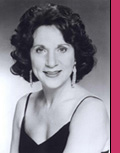
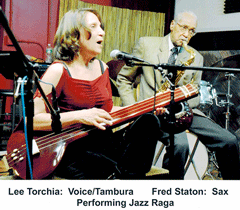

********************************
****************************
**********
To Book a live Concert and/or a Master Class, Please call: 212.695.1906
email: leetorchia@yahoo.com

“Lee Torchia Sings”
Cable TV/Web Program Series
Featuring North Indian Classical Raga
Performances and Teachings
(And sometimes Jazz)
WAIT FOR IT
A TV program
To watch on the web
http://www.mnn.org/live/2-lifestyle-channel
Click above ONLY
@ 2:30 pm EST
(Every Other) Monday:
December 29, 2014
January 12, 2015
January 26, 2015
February 9, 2015
February 23, 2015
March 9, 2015
March 23, 2015
Also Simultaneous live Cable Television Broadcast
(in Manhattan only)
Same Mondays as above @ 2:30 PM
TWC - Channel 56
RCN - Channel 83
FIOS - Channel 34
**************************************
**************************************
Lee Torchia:
Jazz Singer and Kirana Gharana Vocalist
Announces New Cable TV/Web Series
Premiere
Monday, October 6, 2014
2:30 PM
Raga Bhairev
Kharaj Practice:
Ancient Voice Culturing
Program I:
A Teaching:
Approaching morning raga,
warming up the voice
exploring the lowest registers,
cultivating the ear,
expanding recognition of the microtones of the East,
and painting the "face" of Raga Bhairev.
World-Wide Web TV Broadcast
http://www.mnn.org/live/2-lifestyle-channel
and
TWC - Channel 56
RCN - Channel 83
FIOS - Channel 34
(Manhattan Only)
Monday, October 6, 2014
2:30 PM
contact: leetorchia@jazzraga.com
*****************
*********
JUNE 13, 2014
11PM - 11:30 PM
Eighth Annual Concert
Honoring the Urs of her Guru, Pandit Pran Nath
(November 3, 1918 - June 13, 1996)
Lee Torchia Sings Kirana Gharana
Polash Gomes on Tabla
Live Web and Cable TV Broadcast
Friday June 13, 2014
11:00 pm to 11:30 pm EST
TWC - Channel 34
RCN - Channel 82
FIOS - Channel 33
Click Here for Simultaneous Live Worldwide Web Broadcast
*********
March 18, 2014
The Metropolitan Room
7-8:15 PM<
34 West 22nd St. (Bet. 5th & 6th Aves)
New York, NY 10010
RESERVATIONS: CLICK HERE
Jazz Standard Love Songs, Blues and Bop
James Weidman: Piano
Bass & Drums: TBA
Plus Special performance of Jazz/Raga Fusion

ONE PERFORMANCE ONLY
$20 cover, 2 beverage minimum
RESERVATIONS: CLICK HERE
************
Raga Bhupali
Wed, Jan 29, 2014 @ 3:30 PM EST
Lee Torchia: Voice and Tambura
Narendra Budhakar: Tabla
Watch Live: http://www.mnn.org/live/3-spirit-channel
INDIAN RAGA CONCERT
with RIK MASTERSON and LEE TORCHIA
 Disciples of Pandit Pran Nath,
Disciples of Pandit Pran Nath,
Saturday August 24, 2013 7pm
NRITYA MANDALA MAHAVIHARA
1405 SE 40th Avenue
Portland OR 97214
503-233-3703
Suggested donation $15
Indian Classical Music was developed by mystics living in the ancient forests who meditated on the 24-hour cycle of nature, observing the movements of the sun, moon, sky, trees, water and wind. These sadhus (holy men and women) discovered special sounds that were connected to the passing moments of time, and they developed modal scales (using 22 notes in one octave), and created Ragas (compositions). When sung at the proper time, the raga evokes and reflects the natural atmosphere and mood of the morning, night, or seasons. A drone instrument, the tambura, accompanies the singers and is often compared to the composite waveform sound of the ocean.
Lee Torchia studied classical Indian music privately with Pandit Pran Nath, the greatest of North Indian Raga masters, as well as with his disciples, La Monte Young and Terry Riley. They are among the highest authorities of the American Minimalist and Microtonal tradition. She went to India four times with this select group of musicians to study, travel and absorb the culture and traditions. Lee was also drawn into the New York jazz community, joining Barry Harris' workshop in 1978, studying privately with Helen Merrill, and performing with many of the top jazz musicians including Walter Bishop,Jr., Dick Katz, Doc Cheatham, Chuck Folds, Jackie Williams, Ray Mantilla, Slide Hampton and Muhal Richard Abrams. In December of 1985 she assembled an all-star rhythm section and recorded the CD: Loverman, A Tribute to Billie Holiday.In 1996 Lee accompanied her Guru, Pandit Pran Nath in workshops and performances in Paris, France. She began solo Hindustani Classical Vocalist concerts in the traditional Indian style at the Bruno Walter Auditorium at Lincoln Center, Pace University, Pratt Institute, Penn State Scranton and Schuylkill. As adjunct faculty, she was teaching Raga and presented a Master Class for the Jazz Department at the New School University in New York.http://www.jazzraga.com
Rik Masterson, vocalist, is a devoted student, performer, and teacher of North Indian classical vocal music. Rik Masterson began his formal study of traditional raga in 1979, and has trained in vocals, tabla, sitar, and other classical instruments with some of India’s most revered artists. In 1983, he sought guidance and inspiration from the master raga singer and revered nada yogi of India, Pandit Pran Nath of the Kirana gharana. Finding yogic and intuitive discipline through Pandit Pran Nath’s teaching, Rik became a close disciple, accompanist and attendant to him until his passing in 1996, while also receiving the
direction to teach. Rik is dedicated to upholding the transmission of this singing as he was given by his teacher and to the practice of it as a spiritual discipline.
These years of practicing Sanskrit-based sacred music along with his interest in Buddhism lead Rik to study with Dance Mandal the unique Nepalese Buddhist raga tradition of Charya Giti. He is the first trained Western singer to accompany the dance.
Rik’s skill in experiential teaching reflects his many years of valued training in the yoga of sound.The technical and sacred elements of his traditional training come to life in his inspired performances.
June 14, 2013
11PM- 12 Midnight
LeeTorchia: Tambura and Voice
Polash Gomes: Tabla
WKCR 89.9FM
"24-Hour Broadcast of Ragas Live Festival"
********************************
June 13, 2013, 2:30 pm to 3:00 pm EST
Seventh Annual Concert
Honoring the Urs of her Guru, Pandit Pran Nath
(November 3, 1918 - June 13, 1996)
Lee Torchia Sings Kirana Gharana
Kumar Das on Tabla
Live Web and Cable TV Program
Thursday June 13, 2013
2:30 pm to 3:00 pm EST
TWC - Channel 34
RCN - Channel 82
FIOS - Channel 33
Click Here for Simultaneous Live Worldwide Web Broadcast
********************************
November 22, 2012
Jazz Concert
for Thanksgiving Dinner for Those in Need
12 noon - 2 pm
Metro BaptistChurch
410 West 40 Street
New York, NY 10036
Lee Torchia: Voice and Piano
Bob Feldman: Sax
********************************
Nov 3, 2012 - 3pm
FREE CONCERT
Lee Torchia Sings North Indian Raga
Manhattan Plaza - Ellington Room
400 West 43 St (9th Ave), NY, NY 10036
Lee Torchia, 20-year disciple of Pandit Pran Nath, Master of the Kirana lineage of North Indian Classical Music, will give a free concert to celebrate the birthday of her guru (Nov 3, 1918 - June 13, 1996). Kirana gharana focuses on the alap, the slow unfolding of the precise pitches of the raga, connecting the breath to the Divine.
Polash Gomes will play Tabla.

Lee has performed Hindustani Classical Vocal concerts at the Bruno Walter Auditorium at Lincoln Center, Pace University, Pratt Institute, Penn State Scranton and Schuylkill, and others, as well as ashrams and spiritual sites in India. She was adjunct faculty at the New School University Jazz Department in New York City. Lee accompanies herself with the traditional string drone instrument, the tambura. http://www.jazzraga.com/itinerary
Polash Gomes is an accomplished tabla player in New York area. He follows the line of the distinguished Lucknow baj a disciple of Dr. Mrinal Pal a senior disciple of Khanshaib Ustad Afaq Hussain Khan of Lucknow Gharana. He has also studied tabla under Pandit Swapan Chaudhri. He has performed for the United Nations, Brooklyn Museum, Rubin Museum, Asia Society-NY, Columbia University, Bucknell University, Brooklyn County College, and more. He is the founder of Rageshree Music institute, a not-for-profit organization dedicated to the dissemination of Indian Music in the West. http://www.rageshreemusic.com
********
"Lee Torchia Paintings"
Art Exhibition July 1 - July 31, 2012
Druids
736 Tenth Avenue (50th Street)
New York, NY 10036


Pandit Pran Nath by Lee Torchia
****************
June 13, 2012, 7pm to 7:30 pm EST
MNN Cable Live TV Show
Lee Torchia sings Kirana Gharana Alap and Khyal Compositions
Honoring the Birthday of Pandit Pran Nath, My Guru
(November 3, 1918 - June 3, 1996)
Watch Live Cable TV on the Internet Here
***********
November 24 and December 25, 2011
Thanksgiving and Christmas Concerts for the Homeless
Metro BaptistChurch
410 West 40 Street
New York, NY 10036
Lee Torchia: Voice and Piano
Bob Feldman: Sax
***********
November 3, 2011
MNN Cable TV Show
Honoring the Birthday of Pandit Pran Nath, My Guru
***********
June 13, 2011
MNN Cable TV Show
Honoring the Urs of Pandit Pran Nath, My Guru
(November 3, 1918 - June 3, 1996)
***********
Januay 30 - March 25, 2011
New Delhi, India
A trip which included performances at the
Dargah of the Sufi Saint, Hazrat Inayat Khan on Feb 5, 2011
and also at the
Durgah of the Hindu/Muslim Saint, Shirdike Sai Baba March, 2011
***********
December 25, 2010 - Christmas
Jazz Concert for the Homeless
Metro BaptistChurch
410 West 40 Street
New York, NY 10036
Lee Torchia: Voice and Piano
Bob Feldman: Sax
***********
November 25, 2010
Thanksgiving Jazz Concert for the Homeless
Metro BaptistChurch
410 West 40 Street
New York, NY 10036
Lee Torchia: Voice and Piano
Bob Feldman: Sax
***********
November 3, 2010
9:30 PM - 10 PM
Live Cable TV show
In Honor of the Birthday of
My Guru,
Pandit Pran Nath
November 3, 1918 - June 13, 1996
New York City
Channels 56/83/34
or link here to
Live Streaming on the WEB
http://www.mnn.org/en/viewers
Then Click on MNN2
Lee Torchia: Voice and Tambura
Maitreya Padukone: Tabla
Directed by: Gloria Messer
***********
April 28 , 2010 - August 28, 2010
Wheatgrass and Raw Food Retreat
Weekly Performances of Jazz and Raga
"Friday Night Live"
Optimal Health Institute
San Diego, California
***********
June 13, 2010
Pandit Pran Nath Urs
Sur Laya Sangam – Study Center for Indian Devotional Music, Albany, California
6:30 a.m.– Sri Karunamayee (vocal)
8:00 a.m. – Joan Allekotte (vocal)
9:00 a.m. - Arshad Syed (Instrumental: Santoor)
12:00 noon. – Terry Riley (vocal)
1:00 p.m. - Lee Torchia (vocal)
************
February 6, 2010
North Indian Classical Vocal Concert
Berkeley, California
152 Highland, Kensington
************
December 25, 2009
Christmas Jazz Concert for the Homeless
Metro BaptistChurch
410 West 40 Street
New York, NY 10036
Lee Torchia: Voice and Piano
Bob Feldman: Sax
************
November 26, 2009
Thanksgiving Jazz Concert for the Homeless
Metro BaptistChurch
410 West 40 Street
New York, NY 10036
Lee Torchia: Voice and Piano
Bob Feldman: Sax
November 1, 2009
North Indian Classical Vocal Concert
A FREE CONCERT and OPEN to the PUBLIC
EAST INDIAN RAGA
Celebrating the birthday and the meditative music of her Guru,
PANDIT PRAN NATH
ELLINGTON ROOM -
MANHATTAN PLAZA
400 West 43 Street (9th Ave), NYC 10036
************
October 17, 2009
New Life Expo
Lecture/Performance
North Indian Classical Vocal Music
http://www.newlifeexpo.com/expopdfs/18_events.pdf
Lecture
"The Fundamental of Raga Singing"
New Life
Expo
New Yorker Hotel, 481 Eight Avenue NYC
8 - 9 PM
************
August 18 , 2009
MEMORIAL SERVICE FOR
LAWRENCE 'LARRY' LUCIE
(December 18, 1907 - August 13, 2009)
Premiere:
Five-Minute Jazz/Raga Fusion
"All Blues" by Miles Davis
Solo Vocal
with Tambura
************
Saturday, June 13, 2009
7:30 - 8:00 PM
SERENITY IN SOUND
RAGA CONCERT
CELEBRATING THE URS OF
PANDIT PRAN NATH
November 3, 1918 - June 13, 1996

LEE TORCHIA
A FREE CONCERT and OPEN to the PUBLIC
EAST INDIAN RAGA
the meditative music of her Guru,
PANDIT PRAN NATH
ELLINGTON ROOM
MANHATTAN PLAZA
400 West 43 Street (9th Ave), NYC 10036
April 14, 2009
Lee Torchia: Jazz and Raga
Pratt Institute in the Pie Shop
300 Willoughby Ave., Brooklyn NY 11205
8 PM
Lee Torchia: Voice and Tambura
James Weidman: Piano
Marcus McLaurine: Bass
This is Lee's fourth appearance at Pratt Insitute.

************
April 8, 2009
Lee Torchia: Jazz and Raga

Metropolitan Room
34 West 22 Street, New York, NY 10010
$15 Cover, 2 Drink Minimum
Lee Torchia: Voice and Tambura
James Weidman: Piano
Jackie Williams: Drums
Marcus McLaurine: Bass
At this famous Cabaret Setting on the New York Scene, Lee sang songs from her album, "Loverman", debuted originals, and ended with a surprise premiere of a "Five-Minute Raga"
************
February 20 , 2009
Lee Torchia and Her Real Jazz Pals
Hearthstone Nursing Home
New York, NY
2 PM
Lee Torchia: Voice and Piano
Bob Feldman: Sax
Billie Kaye: Drums
Lisle Ellis: Bass
************
December 25 , 2008
Christmas Jazz Concert for the Homeless
Metro BaptistChurch
410 West 40 Street
New York, NY 10036
(Between 9th and 10th Avenue)
Lee Torchia: Voice and Piano
Bob Feldman: Sax
November 27, 2008
Thanksgiving Jazz Concert for the Homeless
Metro BaptistChurch
410 West 40 Street
New York, NY 10036
(Between 9th and 10th
Avenue)
Lee Torchia: Voice and Piano
Bob Feltman: Sax
November 2, 2008
East Indian Raga Performance
2nd Annual Concert of
EAST INDIAN CLASSICAL RAGAS
SUNDAY, November 2, 2008 - 3 P.M
Celebrating the Birthday of Lee's Guru
PANDIT PRAN NATH
(November 3, 1918 - June 3, 1996)
ELLINGTON ROOM
Manhattan Plaza
400 West 43 Street
New York, NY 10036
(43 Street and 9th Avenue)
Free and Open to the Public

Polash Gomes and Lee Torchia
Indian Classical Soloist Vocal Concerts
PAST PERFORMANCES
2008 Ellington Room, Manhattan Plaza, NYC, Kumar Das - Tabla
2007 Ellington Room, Manhattan Plaza, NYC, Polash Gomes - Tabla
2006 Frederick Community College, Polash Gomes - Tabla
2005 American Cancer Society Breast Health Partnership, Polash Gomes - Tabla
2002 Penn State Scranton, Polash Gomes - Tabla
2002 Penn State Schuylkill, Polash Gomes - Tabla
2002, 2003 Self-Realization Fellowship, India Night Fundraiser, Polash Gomes - Tabla
2000 University of Maryland Eastern Shore, Polash Gomes - Tabla
2000, Pratt Institute, Maitreya Padukone - Tabla
1998 and 1997, Pratt Institute, Polash Gomes - Tabla
1997 Pace University, Polash Gomes - Tabla
1997, 1998, 1999 Woodstock Festival, Yasgur Farms, Mrinal Pal - Tabla
1995 Environmental Fundraiser, NY Windstar Youth Association
1994 Bruno Walter Auditorium, NY Public Library for the Performing Arts,
Indian Arts Festivalm Misha Masud - Tabla.
Concerts with Hindustani Masters
2002 Mela Foundation Dreamhouse - Ustad Hafizullah Khan Sahib Sarangi Concert,
La Monte Young and Lee Torchia - Tambura; Rose Okada - Sarangi; Rik Masterson - Tabla
1997 Tribe Dance Studio - Terry Riley Vocal concert of North Indian Ragas; Michael Harrison - Voice and Tambura; Lee Torchia - Tambura; Rose Okada - Sarangi; Rik Masterson - Tabla
1996 Sufi Book Store, NY, Pandit Pran Nath Vocal Concert
Lee Torchia and Michael Harrison - Voice and Tambura,
1996 Centre Mandapa, Paris France, Pandit Pran Nath Vocal Concert,
Lee Torchia - Voice and Tambura; Rose Okada -Sarangi; Rick Masterson -Tabla
Teacher - Hindustani Vocal:
2003 Master Class - New School Jazz & Contemporary Music Program, NY, Naren Budhakar - Tabla
2002/2003 Adjunct Faculty - New School University Jazz Dept., NY, NY, Private Raga Teacher
2003 to Present - Private Teacher, NYC
JazzRaga Performances in New York
1993 West End Gate: Gary Dial - Piano; Ricky Ford - Saxophone; Hui Cox - Guitar;
Ray Mantilla - Percussion; Fred Hopkins - Bass; J.R. Mitchell - Drums.
1993 CB'S CBGB'S Gallery NYC
1992 Jazz Vespers, St. Peter's Church Walter Bishop, Jr. - Piano; Jeff Holck - Bass;.
Rudy Romero - Congas; Chuck Wilson - Saxophone.
Village Gate: Michael Hashim - Saxophone; David Marck - Piano; Jeff Holck - Bass;
Rudy Romero - Bongos; Jose Davila - Trombone.
Jazz Singer Performances
The Terrace, Village Gate: James Weidman - Piano; Dan Fox -Guitar.
Danny's Skylight Room: Armen Donelian - Piano; Michael Fleming - Bass Jack Walreth - Trombone.
World Trade Center, Market Grill: Larry Porter - Piano; Ronnie Boykins - Bass.
VanBuren: Dick Katz - Piano; Michael Fleming - Bass; Slide Hampton - Trombone.
Lee Torchia Singer/Musician
Curriculum Vitae Page Two
Big Bands
1978 - Manhattan Plaza Big Band: Featured Soloist, Director: Muhaul Richard Abrahms.
1979 - Ted Daniel's Big Band: Featured Soloist
1979 - Brownie's Big Band: Featured Soloist.
Recordings:
"Loverman, A Tribute to Billie Holiday" with Roger Ram Ramirez, the composer of "Loverman" - Piano;
Mel Lewis - Drums; Milt Hinton - Bass; Ricky Ford - Saxophone
"Sweet Remembrance" by Tony Dagradi -Tenor, Soprano Sax; Bob Moses - Drums;
Harvie Swartz - Bass; Fred Hirsch -Piano; Ray Spiegel -Tabla; Lee Torchia - Tambura.
Cable Television Show
1997 - 1998 "JazzRaga with Lee Torchia" 28-minute Bi-Weekly Cable Broadcast
Manhattan Neighborhood Network Cable TV Show, New York Metro Area
1996 - Current (2008) "JazzRaga Special" - Occastional MNN Cable TV Broadcasts
Voice Training:
Pandit Pran Nath, La Monte Young and Marian Zazeela, Terry Riley, Helen Merrill; Barry Harris
Fellowship:
1980 National Endowment of the Arts Jazz Fellowship Grant Recipient (ID Ref # 01-3130-174)
College Degree:
1970 (January) B.A., University of Maryland, College Park; Major - Speech & Drama; Minor - Voice
Current Professional Associations
A.F.T.R.A., S.A.G., MELA Foundation
(IWJ) International Women in Jazz (Board of Directors 2005 - 2006)
To Book a Concert/Master Class, Call: 212.695.1906 or email: leetorchia@yahoo.com
To Book International Festival Concerts or Workshops or for Private Study, Contact leetorchia@jazzraga.com 1212 695-1906
484 West 43 Street, #32B, New York, New York, 10036 :: email:leetorchia@jazzraga.com
all rights reserved 2003